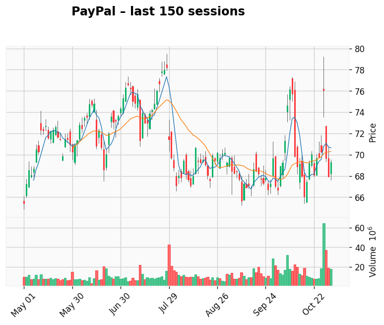

Foxorox AI Market Forecast – 2025-12-04
AI-generated analysis combining predictive modeling and recent market context.
American Electric Power (AEP)
American Electric Power
Gap: 2.53% Candle: 69.22% (black)
American Electric Power shows bearish sentiment (69.22%, gap 2.53%).
American Electric Power – Is the AI Power Boom Really That Bullish?
AI-powered demand for electricity sounds like a dream scenario ...
🇺🇸 AEP – a giant in a “perfect” macro story… at least on paper
The U.S. power sector is going through a structural shift. Data centers, cloud infrastructure and AI workloads...
AEP is big, systemically important and defensive – but that doesn’t automatically make it a pure play...
🔻 1. More demand ≠ unlimited pricing power
AEP is a regulated utility. This means:
- It can’t freely set prices due to regulatory caps
- Tariff increases take long approval cycles
- ROE limits upside profit margin
Even with AI power demand boom — earnings may not scale equally fast.
⚠️ 2. Data center boom as a double-edged sword
Market narrative: “More servers → more energy → utilities win”. Reality is more complex:
- Hyperscale loads require massive grid upgrades
- Capex heavy → returns slow
- AI companies negotiate low long-term prices
- Renewable transition accelerates cost burden
🌪 3. High capex + high rates = valuation drag
Utilities = debt financed. High interest rates erode margin expansion.
🚧 4. Energy transition is expensive
Coal retirement, new solar/wind build-outs, regulatory uncertainty...
🤔 AI demand might be overhyped long-term
- Compute efficiency improves over time
- On-site generation reduces dependency
- PPAs can limit margin expansion
🧠 Final Takeaway
AEP = stable, dividend friendly, defensive — not explosive AI growth play.

PayPal
Gap: 44.34% Candle: 62.00% (black)
PayPal shows bearish sentiment (62.00%, gap 44.34%).
PayPal – A Former Fintech King Now Fighting for Relevance
PayPal was once the icon of online payments with a dominant brand and near-monopoly visibility.
Today the company’s market cap has dropped from over $300B to around $60–70B. This is not just a post-pandemic correction
but a result of deeper structural issues built into the business model.
PayPal still holds global scale and a massive user base — but it has lost the moat and margin power it once had.
It is now one of many players in a brutally competitive payment ecosystem.
⚠ 1. Competition is everywhere — and stronger than ever
PayPal’s core challenge is simple: it is no longer unique. Competitors are attacking from all sides:
- Apple Pay / Google Pay dominate mobile payments
- Stripe controls the developer + e-commerce integration space
- Klarna, Affirm, BNPL players captured younger users
- Bank-to-bank payments reduce the need for intermediaries
- Stablecoins/Web3 rails threaten cross-border fees
The result? Take-rate pressure and thinning margins.
⚠ 2. Volume grows — profit per transaction shrinks
Revenue per transaction continues to decline even as payment volume increases.
PayPal has become a scale processor rather than a premium platform with pricing power.
Growth in GMV ≠ growth in EPS.
⚠ 3. Venmo: huge user love — tiny monetization
Venmo remains culturally iconic — but monetization is weak relative to scale.
A beloved consumer product is not yet a high-margin business.
🔥 Great engagement — 🧊 Weak ARPU.
⚠ 4. AI does not fix PayPal’s core business problem
AI helps PayPal with fraud detection, risk scoring and automation —
but AI is not a revenue engine here, only an efficiency tool.
For Nvidia AI is revenue — for PayPal AI is cost optimization.
⚠ 5. No structural tolling moat like VISA / Mastercard
Visa & Mastercard earn a fee on every card transaction globally.
PayPal earns only when merchants choose it.
A network toll vs a competitive payment option — very different economics.
🧠 Investor Takeaways
- PayPal is in transition — from hyper-growth to value/turnaround narrative.
- Still a strong brand with global reach — but moat is weaker each year.
- Returns depend heavily on improving take-rate and monetizing Venmo.
- Upside exists only if PayPal rebuilds pricing power or launches sticky new services.
PayPal is not dying — but no longer a fintech rocket.
It fits turnaround/value strategies rather than high-growth expectations.
